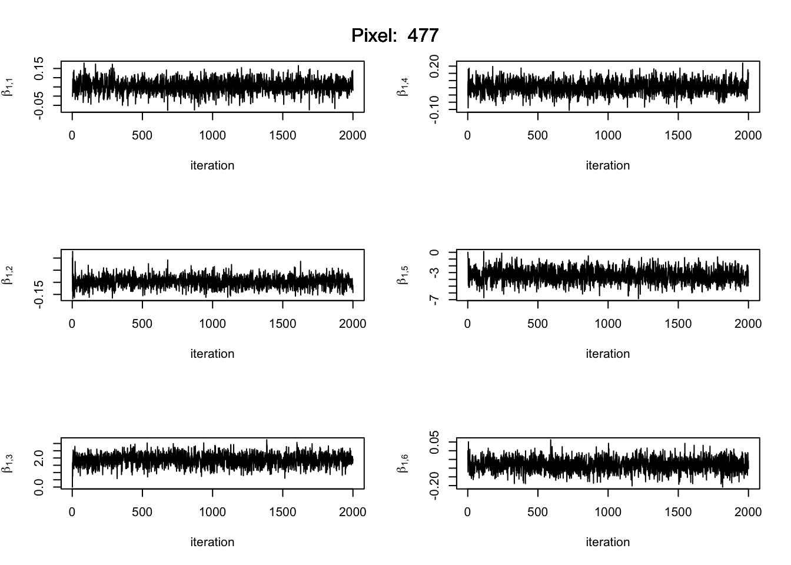
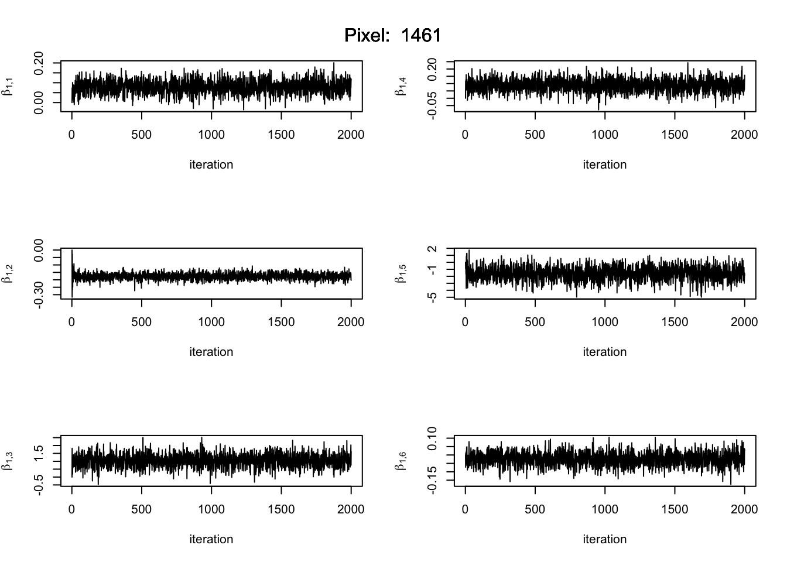
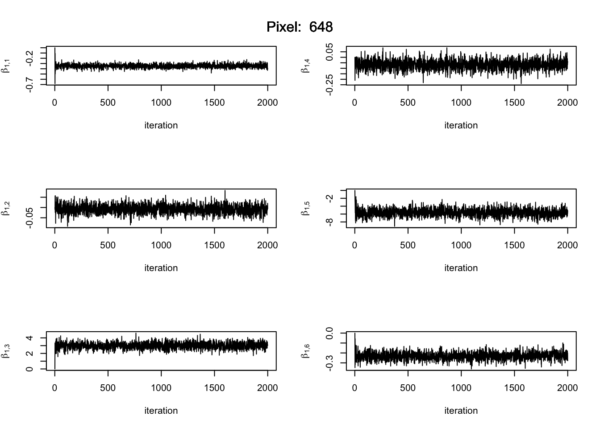
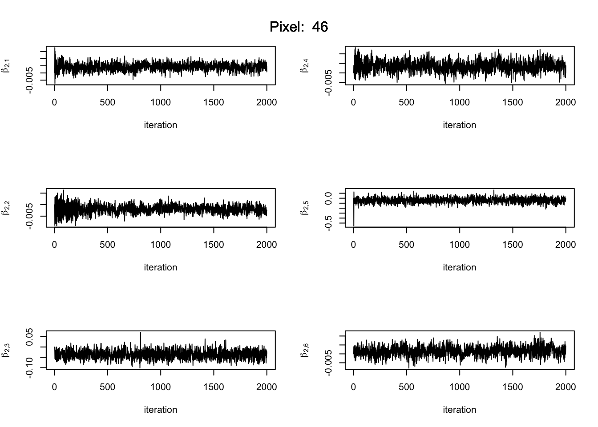
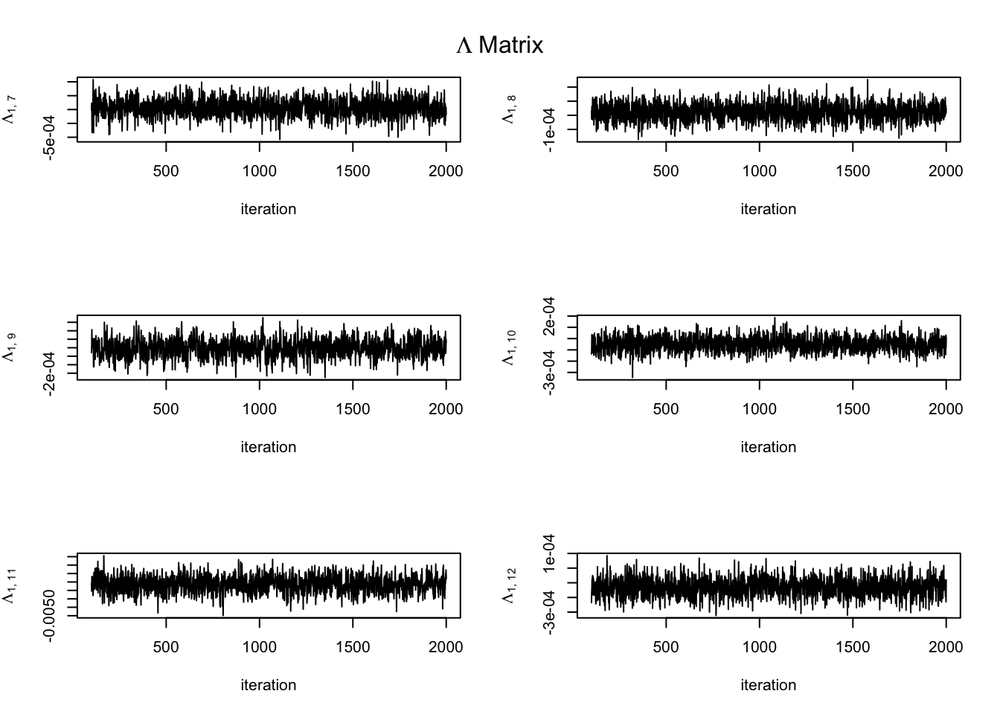
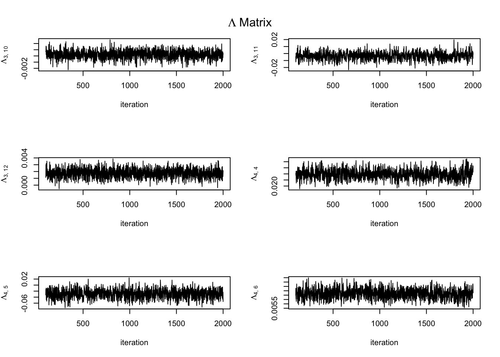

An attempt to fit the spatial model to a 50x50 pixel region of the Harvard Forest Region. This new post fixes two previous errors.
A methodological error in handling missing values in the Bayesian spatial model. Missing values are now treated as parameters in the MCMC.
A typo in the likelihood of one of the MCAR propeity parameters, \(\rho_\epsilon\). Previous model fits claimed that this parameter was near 0 indicating spatial independence in the errors which was not expected and disagreed with maps of the residuals. After fixing the typo, we now detect spatial dependence in errors as expected.
Here are the steps:
Read-in the Harvard Forest data
Remove bad layers - previously identified by visual inspection
Crop to a smaller region - 50 x 50 pixels
Aggregate data to a mean value for each satellite snapshot (raster layer)
Fit a region average model using the aggregated data and the double-logistic function
Compute the residuals from the average model
Linearize the double-logistic function with respect to its parameters, center on the average model parameter estiamtes.
Define the basis function matrix and new parameter vector, \(\boldsymbol\delta{s,t}\), representing the difference between the region average and a site-year double logistic parameter vector.
Model the residuals as normal with a mean function that is a linear combination of gradient basis functions.
Compute the least-squares estimate for the coefficients of this linear combination, \(\widehat{\boldsymbol\delta}_{s,t}\)
Compute sample covariance matrices for \(\widehat{\boldsymbol\delta}_{s,t}\) for each year of data.
Treat these results as inputs to the spatial Bayesian hierarchical model.
Set-up and run the MCMC for the spatial Bayesian hierarchical model.
Generate trace plots for some model parameters.
Plot spatial Bayes model residuals.
Satellite snapshop filter
# from a previous exploratory analysis. Used to identify the layers to filter out from the Harvard Forest spatraster object.layer_agg_hf <-read_csv("~/ms-web/research/data/harvard_forest/layer_agg_hf.csv", show_col_types =FALSE)bad_layers_year <-c(1984, 1984,1986, 1988, 1990, 1992, 1995, 1995,1999, 1999,2001,2003,2005, 2005,2008,2009, 2009,2011, 2011,2013,2014,2015, 2015,2016,2017, 2017,2019, 2019 ) bad_layers_doy <-c(171, 155,167,310,315,145,9, 16,4, 332,345,334,300, 364,316,31, 183,36, 84,154,341,15, 151,339,21, 68,314, 66)bad_layer_year_days <-paste(bad_layers_year, bad_layers_doy, sep="-")filter_ind <-which(paste(layer_agg_hf$year, layer_agg_hf$doy, sep="-") %in% bad_layer_year_days) NA_ind <-which(is.na(layer_agg_hf$mean))
Read and prep raster data
ReadNcTs <-function(ncfile) { r <-rast(ncfile)# Get time nc_in <-nc_open(ncfile) dates <-ncvar_get(nc_in, "time")nc_close(nc_in)# Assign time to the original image objectif (nchar(dates[1]) ==8) { fm <-"%Y%m%d" } elseif (nchar(dates[1] ==7)) { fm <-"%Y%j" }time(r) <-as.Date(as.character(dates), tryFormats = fm)# Reorder the layers by time r <- r[[order(time(r))]]# Get map projection tif <-rast(list.files(dirname(ncfile), ".tif$", full.names =TRUE)[1])crs(r) <-crs(tif)return(r)}# Complete Datahf <-ReadNcTs("~/ms-web/research/data/harvard_forest/harvard_forest_evi2.nc")# filtered data - no NA layers or layers previously identified to be erroneous.hf <- hf[[-c(filter_ind, NA_ind)]]# there are 12 extra pixels with NA values for everything. Let's crop those from the spatraster.# hf <- crop(hf, ext(1923375, 1926405, 2412500, 2415165))# hf# plot(hf[[100]], range = c(0,1))lpix <-50# we will crop again to create a small test region.# hf_test <- crop(hf, ext(1926405 - lpix*30, 1926405, 2412500, 2412500 + lpix*30))hf_test <-crop(hf, ext(1924500, 1924500+lpix*30, 2413000, 2413000+ lpix*30))hf_test
ggplot(data =subset(layer_agg, perc_valid >= snap_filt)) +geom_point(aes(x = doy, y = year, color = perc_valid)) +scale_color_gradientn(colors =viridis(10)) +scale_y_reverse() +labs(title = region, x ="Day of Year") +theme_bw()
Using the point estimates of \(\widehat{\boldsymbol{\delta}}_{s,t}\) and the region average \(\widehat{\boldsymbol{\theta}}_0\), we can recover \(\widehat{\boldsymbol{\theta}}_{s,t}\) using \(\widehat{\boldsymbol{\theta}}_{s,t} = \widehat{\boldsymbol{\delta}}_{s,t} - \widehat{\boldsymbol{\theta}}_0\).
We can also apply back-transformations to recover values corresponding to the original parameterization of the double-logistic function.
Computing the least squares estimate of \(\boldsymbol\delta_{s,t}\) sometimes fails due to too few satellite snapshots in a particular year. We need to identify those cases and handle them as missing data in the follow-on spatial hierarchical model.
Compute the sample covariance \(\widehat{\boldsymbol\Omega}_t\) for each year using the least squares estimates of \(\boldsymbol\delta_{s,t}\).
Compute Sample Covariances for each year
#initialize arrayOmega_arr <-array(rep(c(diag(p)), k), dim =c(p,p,k))inv_Omega_arr <-array(rep(c(diag(p)), k), dim =c(p,p,k))for (t in1:k){ Omega_arr[,,t] <-cov(t(matrix(delta[,t,1:n], ncol = n)), use ="complete.obs") inv_Omega_arr[,,t] <-solve(Omega_arr[,,t])}
Now to set-up the MCMC for the spatial hierachical model.
Number of spatial locations - 2500
Number of covariates - 2
Dimension of response vector - 6x1
Number of MCMC iterations - 2000
Frequency of Metropolis Hastings adjustment - every 100 iterations. Adjusted throughout.
Runtime: A little over 3 hours.
MCMC set-up
p <-6q <-2n <-ncell(hf_test)# For now, the only covariate is time in years, centered and scaled.# Consider changing in the future.# Z array is 3 dim - left to right: time, covariate vector length, spatial indexZ <-array(NA, dim=c(k,q,n))for (s in1:n){#Z[,,s] <- matrix(c(rep(1,k),rnorm((q-1)*k,0,1)), ncol = q) Z[,,s] <-matrix(c(rep(1,k), 1:k), ncol = q)}niters <-2000burn <-2000# burn <- 0.1*niters# storagekeep_beta_mat <-array(0, dim =c(p*q, n, niters))keep_Lambda <-array(0, dim =c(p*q, p*q, niters))keep_rho_eps <-rep(0, niters) keep_rho_beta <-rep(0, niters)# initial valuesmc_beta_mat <-matrix(0, nrow = p*q, ncol = n)mc_beta_arr <-array(NA, dim =c(p, q, n))mc_beta_arr[1:p,1:q,] <- mc_beta_matmc_Lambda <-diag(p*q)mc_rho_eps <-0.95mc_rho_beta <-0.95keep_beta_mat[,,1] <- mc_beta_matkeep_Lambda[,,1] <- mc_Lambdakeep_rho_eps[1] <- mc_rho_epskeep_rho_beta[1] <- mc_rho_beta# prior parametersnu <- p*q -1+0.1G <-diag(p*q)# M-H tuning parametersMH_beta <-0.05att_beta <-0acc_beta <-0MH_eps <-0.05att_eps <-0acc_eps <-0# initialize missing values to 0 (no difference from region average model)n_miss <-nrow(missing_id)for (i in1:n_miss){ delta[ , missing_id$year[i], missing_id$site[i]] <-0}
Some pre-computes for the MCMC.
MCMC pre-computes
# tic()# Pre-compute the first summation term for V in the full conditional for beta.sumt_ZT_Omega_inv_Z <-array(0, dim =c(p*q, p*q, n))for (s in1:n){for (j in1:k){ sumt_ZT_Omega_inv_Z[,,s] <- sumt_ZT_Omega_inv_Z[,,s] +t(kronecker(t(Z[j,,s]),diag(p)))%*%inv_Omega_arr[,,j]%*%kronecker(t(Z[j,,s]), diag(p)) }}# collect the neighbor indices for use within the sampling loop. # probably a better way to do this withough creating a sparse matrix.spat_domain_g <-make_lattice(c(sqrt(n),sqrt(n)), mutual =TRUE)W <-as_adjacency_matrix(spat_domain_g, sparse=0)neighbor_idx <-apply(W, MARGIN =1, function(x) which(x==1))neighbor_weights <-lapply(1:n, function(x) W[x, neighbor_idx[[x]]])# Pre-compute the number of neighbors for each pixel.w_plus <-rowSums(W)D <-diag(w_plus)# pre-compute residuals for the first iteration.Bz <- deltafor (j in1:k){for (s in1:n){ Bz[,j,s] <- mc_beta_arr[,,s]%*%Z[j,,s] }}resid <- delta - Bz
Now for the sampling loop. Not executed here. Results loaded next.
MCMC sampling loop
tic()# profvis({for (iter in2:niters){# computing residuals needed in full conditional for beta - M.# probably a better way to do this. inv_mc_Lambda <-solve(mc_Lambda)# sample beta_sfor (s in1:n){ V <- w_plus[s]*sumt_ZT_Omega_inv_Z[,,s] + w_plus[s]*inv_mc_Lambda# revisit for efficiency temp <-0for (j in1:k){ temp <- temp +t(kronecker(t(Z[j,,s]),diag(p)))%*%inv_Omega_arr[,,j]%*%(mc_rho_eps*resid[,j,neighbor_idx[[s]]]%*%neighbor_weights[[s]] +w_plus[s]*delta[,j,s]) } M <- temp + mc_rho_beta*(inv_mc_Lambda%*%(mc_beta_mat[,neighbor_idx[[s]]]%*%neighbor_weights[[s]])) V_inv <-chol2inv(chol(V)) mc_beta_mat[,s] <- V_inv%*%M+t(chol(V_inv))%*%rnorm(p*q)# mc_beta_mat[,s] <- beta_mat[,s] } mc_beta_arr[1:p,1:q,] <- mc_beta_mat# sample Lambda H <- mc_beta_mat%*%(D - mc_rho_beta*W)%*%t(mc_beta_mat) mc_Lambda <- MCMCpack::riwish(nu + n, G + H)# mc_Lambda <- Lambda# compute residuals Bz <- deltafor (j in1:k){for (s in1:n){ Bz[,j,s] <- mc_beta_arr[,,s]%*%Z[j,,s] } } resid <- delta - Bz# compute sums for rho_beta & rho_eps likelihood in one loop. sum1_rho_beta <-0 sum2_rho_beta <-0 sum1_rho_eps <-0 sum2_rho_eps <-0for (s in1:n){ beta_tilde <- (mc_beta_mat[,neighbor_idx[[s]]]%*%neighbor_weights[[s]])/w_plus[s] sum1_rho_beta <- sum1_rho_beta + w_plus[s]*(t(beta_tilde)%*%inv_mc_Lambda%*%beta_tilde) sum2_rho_beta <- sum2_rho_beta + w_plus[s]*(t(mc_beta_mat[,s])%*%inv_mc_Lambda%*%beta_tilde)for (t in1:k){ r <- resid[,t,neighbor_idx[[s]]]%*%neighbor_weights[[s]] sum1_rho_eps <- sum1_rho_eps + (t(r)%*%inv_Omega_arr[,,t]%*%r)/w_plus[s] sum2_rho_eps <- sum2_rho_eps + (t(delta[,t,s]) -t(Bz[,t,s]))%*%inv_Omega_arr[,,t]%*%r } }# sample rho_eps att_eps <- att_eps +1 can <-rtnorm(1, mc_rho_eps, MH_eps, a =0, b =1) R <- (-0.5*((can^2)*sum1_rho_eps -2*can*sum2_rho_eps)) - (-0.5*((mc_rho_eps^2)*sum1_rho_eps -2*mc_rho_eps*sum2_rho_eps)) +dtnorm(mc_rho_eps, mean = can , sd = MH_eps, a =0, b =1, log = T) -# M-H adjustmentdtnorm(can, mean = mc_rho_eps , sd = MH_eps, a =0, b =1, log = T)if(log(runif(1)) < R){ acc_eps <- acc_eps +1 mc_rho_eps <- can }# mc_rho_eps <- rho_eps# sample rho_beta att_beta <- att_beta +1 can <-rtnorm(1, mc_rho_beta, MH_beta, a =0, b =1) R <- (-0.5*((can^2)*sum1_rho_beta -2*can*sum2_rho_beta)) - (-0.5*((mc_rho_beta^2)*sum1_rho_beta -2*mc_rho_beta*sum2_rho_beta)) +dtnorm(mc_rho_beta, mean = can , sd = MH_beta, a =0, b =1, log = T) -# M-H adjustmentdtnorm(can, mean = mc_rho_beta , sd = MH_beta, a =0, b =1, log = T)if(log(runif(1)) < R){ acc_beta <- acc_beta +1 mc_rho_beta <- can }# mc_rho_beta <- rho_beta# tuningif(iter < burn){if(att_eps >100){if(acc_eps/att_eps <0.3){MH_eps <- MH_eps*0.8}if(acc_eps/att_eps >0.5){MH_eps <- MH_eps*1.2} acc_eps <- att_eps <-0 } }if(iter < burn){if(att_beta >100){if(acc_beta/att_beta <0.3){MH_beta <- MH_beta*0.8}if(acc_beta/att_beta >0.5){MH_beta <- MH_beta*1.2} acc_beta <- att_beta <-0 } } keep_beta_mat[,,iter] <- mc_beta_mat keep_Lambda[,,iter] <- mc_Lambda keep_rho_eps[iter] <- mc_rho_eps keep_rho_beta[iter] <- mc_rho_beta# sample missing values n_miss <-nrow(missing_id)for (i in1:n_miss){ s <- missing_id$site[i] t <- missing_id$year[i] V <- Omega_arr[,,t]/w_plus[s] M <- Bz[,t,s] + mc_rho_eps*resid[,t,neighbor_idx[[s]]]%*%neighbor_weights[[s]]/w_plus[s] delta[ , t, s] <- M+t(chol(V))%*%rnorm(p) }}# })toc()
Load the MCMC results from a previous code execution.
Now time for a lot of trace plots. First for \(\boldsymbol\beta_s\). In most cases convergence appears to occur almost immediately. Sometimes it can take up to 1000 iterations where the chain is slowly moving towards a stable mean value.
Trace plots for beta parameters
burn <-1location_sample <-sample(1:n, size =5)beta_subscripts <-paste(rep(1:q, each = p), rep(1:p, times = q), sep =",")for (s in location_sample){par(mfcol =c(3,2))for (i in1:(p*q)){ tsub <- beta_subscripts[i]plot(burn:niters, keep_beta_mat[i,s,burn:niters], type ="l",xlab ="iteration",ylab =bquote(beta[.(tsub)]))mtext(paste("Pixel: ",s), side =3, line =-3, outer =TRUE) }# mtext(paste("Pixel: ",s), side = 3, line = -3, outer = TRUE)}




Trace plots for Lambda matrix
burn <-100par(mfrow =c(3,2))# off-diagonalfor (i in1:(p*q)){for (j in i:(p*q)){ tsub <-paste(i,j, sep =", ")plot(burn:niters, keep_Lambda[i,j,burn:niters], type ="l",xlab ="iteration",ylab =bquote(Lambda[.(tsub)])) }mtext(bquote(Lambda ~"Matrix"), side =3, line =-3, outer =TRUE)}


Focusing on just the diagonal of \(\boldsymbol\Lambda\).
Trace plots for Lambda matrix diagonal.
burn <-100par(mfrow =c(3,2))# off-diagonalfor (i in1:(p*q)){ tsub <-paste(i,i, sep =", ")plot(burn:niters, keep_Lambda[i,i,burn:niters], type ="l",xlab ="iteration",ylab =bquote(Lambda[.(tsub)]))mtext(bquote(Lambda ~"Matrix"), side =3, line =-3, outer =TRUE)}
Traceplots of \(\boldsymbol\Lambda\) transformed to correlations.
Trace plots for Lambda transformed to correlations.
keep_Lambda_corr <- keep_Lambdafor (iter in1:niters){ keep_Lambda_corr[,,iter] <-cov2cor(keep_Lambda[,,iter])}burn <-100par(mfrow =c(3,2))# off-diagonalfor (i in1:(p*q)){for (j in i:(p*q)){ tsub <-paste(i,j, sep =", ")plot(burn:niters, keep_Lambda_corr[i,j,burn:niters], type ="l",xlab ="iteration",ylab =bquote(Lambda[.(tsub)])) }mtext(bquote(Lambda ~"Matrix"), side =3, line =-3, outer =TRUE)}
Traceplots for \(\rho_{\beta}\) and \(\rho_{\epsilon}\) appear less than ideal. These values were initialized at 0.8 - swiftly moved to an \(\varepsilon > 0\) below 1.
Traceplots for CAR propriety params
burn <-100par(mfrow=c(1,2))plot(burn:niters, keep_rho_beta[burn:niters], type ="l",xlab ="iteration",ylab =bquote(rho[beta]))plot(burn:niters, keep_rho_eps[burn:niters], type ="l",xlab ="iteration",ylab =bquote(rho["\u03F5"]))
Mapping the estimates of the intercept and time effect on \(\boldsymbol\delta\).
Map of beta elements 3 and 5 (effects for SOS and EOS)
There are some extreme residuals which affect the gradient scale of the plots above. We will set limits using the 2.5 and 97.5 quantiles as limits. Any pixel residual falling outside these limits are highlighted in red.
Plot histograms of residuals for each component of \(\delta_{+,t}\). Some residuals are clearly not centered on 0. Perhaps this is due to a mean model misspecification?
Histograms of residuals for each year
par(mfrow =c(2,3)) for (t in1:k){for (i in1:p){ subscript <-paste(c("+",years[t],i), collapse =",")hist(delta_fitted[i,t,] - delta[i,t,], main =bquote(delta_resid[.(subscript)])) } }